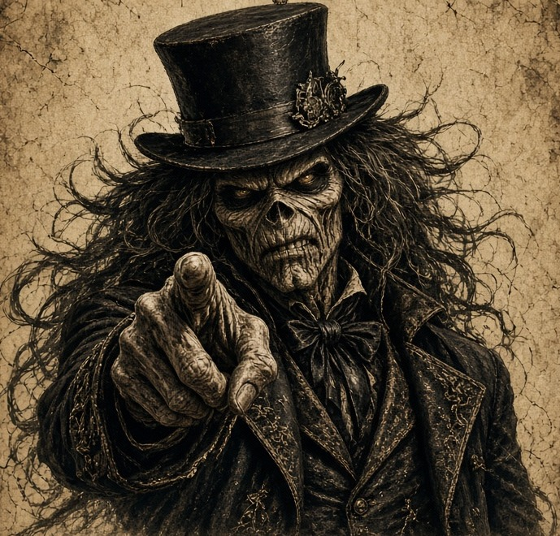
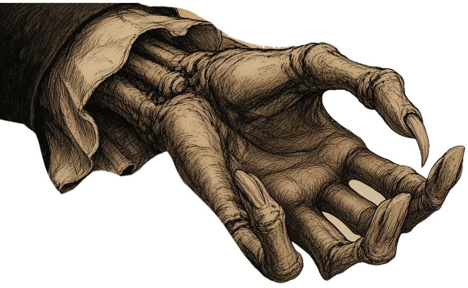
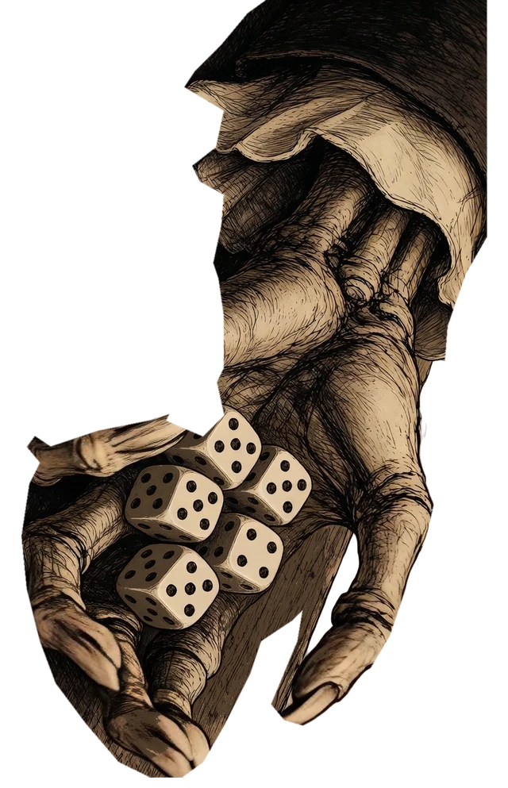
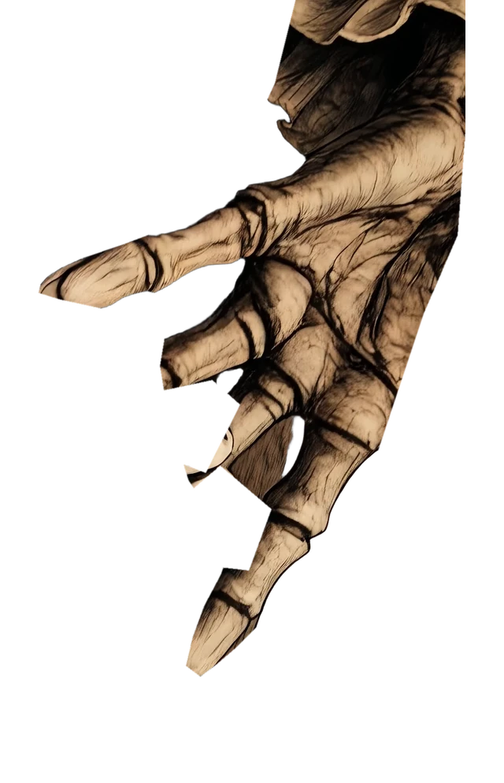

ŚLADAMI KONCERTÓW
POJEDYNEK O LOS

“The chair is yours. The odds are not.”
Czeka na twój pierwszy ruch.
Rzuć kośćmi. Potem zatrzymaj te, którym ufasz.



TRZYNAŚCIE DRÓG DO CHWAŁY
Po rzucie kliknij wolną kategorię w kolumnie „Ty”.
ZANIM LOS ZAPUKA
Grasz przeciwko Eddiemu przez 13 rund. Każdy z was raz w rundzie zapisuje wynik w jednej wolnej kategorii.
Góra: suma wskazanych oczek. Zdobądź 63 punkty w górnej sekcji, a dostaniesz premię 35.
Trójka / kareta: suma wszystkich kości, jeśli masz co najmniej 3 / 4 jednakowe. Full: dokładnie para i trójka, 25 pkt. Mały strit: co najmniej 4 kolejne wartości, 30 pkt. Duży strit: 5 kolejnych wartości, 40 pkt. Generał: 5 jednakowych, 50 pkt. Szansa: suma wszystkich kości.
Klasyczny zapis bez dodatkowych premii za kolejne Generały i bez reguły jokera. Podświetlone liczby pokazują bieżące możliwości, nie zapisany wynik. Przycisk „Dźwięk” steruje efektami dźwiękowymi stołu: grzechotem, stukami kości i zapisem wyniku. Intro to osobny film promocyjny z niezależnym, angielskim głosem lektora.
OSTATNIA KOŚĆ UPADŁA
Przegrałeś. Podpisz petycję: umieść Eddiego w Madame Tussauds.